swcad-js
Salvador Workshop's CAD coding tools (in JavaScript)
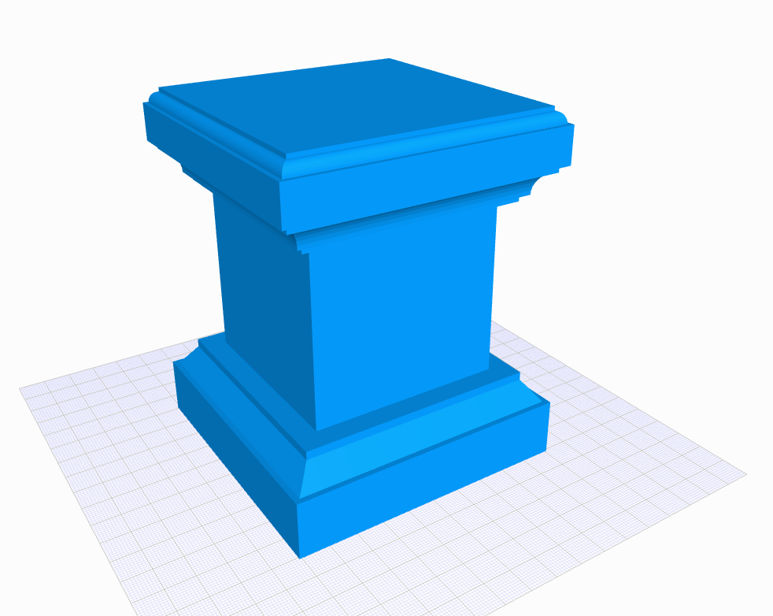
Overview
Online viewer
A heavily customized version of the JSCAD UI (https://github.com/hrgdavor/jscadui)
API Docs
salvador-workshop.github.io/swcad-js/
Repository
github.com/salvador-workshop/swcad-js/
NPM package
SWCAD-JS API
SWCAD-JS functions and utilities.
DATA
Mostly math constants and common dimensions/options.
data.constants
Numeric constants and ratios.
data.standards
Dimensions and options used throughout the SWCAD-JS system.
CALCS
Math calculations and basic JSCAD operations.
calcs.geometry
Geometric calculations in 2D/3D space.
angleOfTwoPtLine(startPt, endPt, mode)
Returns angle of a two-point line.
coordDiffBetweenPoints(startPt, endPt)
Calculates co-ordinate difference between two points.
distanceBetweenPoints(startPt, endPt)
Calculates distance between two co-ordinate points.
getSquarePtsInArea(x, y, distance, centrePoints)
Gets square points in area.
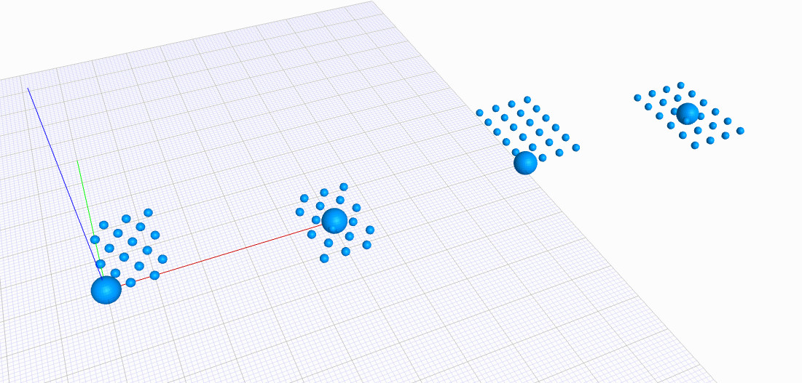
getTriangularPtsInArea(x, y, distance, centrePoints)
Gets triangular points in area.
midpointBetweenPoints(startPt, endPt)
Calculates midpoint between two co-ordinate points.
pointFromAngleAndDist(angleRad, dist)
Gets a point from a given angle and distance, starting from [0, 0].
calcs.geometry.points
Calculations around sets of co-ordinate points in 2D/3D space.
ptCentroid(points, mode)
Finds the central point (avg.) between the given points.
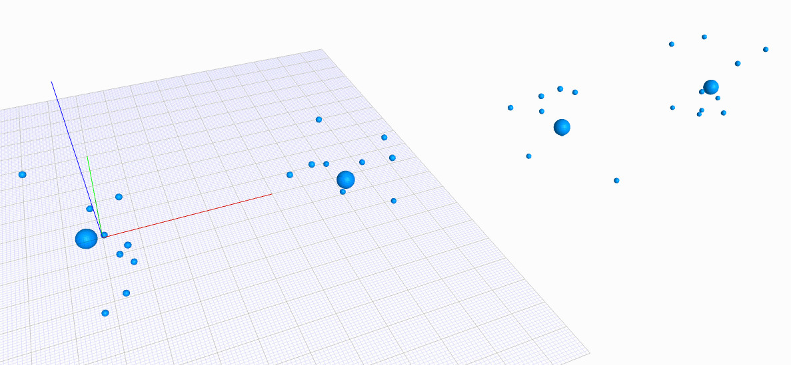
calcs.geometry.regPoly
Calculations around regular (equiangular + equilateral) polygons.
apothemFromCircumradius(circumradius, numSides)
Calculates apothem from circumradius and # of sides.
apothemFromSideLength(sideLength, numSides)
Calculates apothem from side length and # of sides.
circumradiusFromApothem(apothem, numSides)
Calculates circumradius from apothem and # of sides.
circumradiusFromSideLength(sideLength, numSides)
Calculates circumradius from side length and # of sides.
interiorAngle(numSides)
Calculates interior angle from # of sides.
sideLengthFromApothem(apothem, numSides)
Calculates side length from apothem and # of sides.
sideLengthFromCircumRadius(circumradius, numSides)
Calculates side length from circumradius and # of sides.
calcs.geometry.reinforcement
Calculations for reinforcement lines within a shape.
reinforcedRectangle(opts)
Calculates points and lines for a rectangule with internal reinforcements.
calcs.math
Various math calculations.
arrayCartesianProduct(a, b)
Collection of all possible ordered pairs (a, b) such that the first element a belongs to set A and the second element b belongs to set B.
factorize(num)
Given an integer, calculates two integers that are factors for a containing rectangle around the input.
getRandomInt(min, max)
Gets a random integer between min and max. The maximum is exclusive and the minimum is inclusive.
inchesToMm(numInches)
Converts distance in inches to mm.
isEven(n)
Checks if a given integer is even.
isOdd(n)
Checks if a given integer is odd.
mmToInches(numMils)
Converts distance in mm to inches.
calcs.position
Functions leveraging JSCAD to get position data or move 2D/3D geometries.
alignModes
Common alignment modes (for JSCAD's align() function).
measure(inputGeom)
Measures key info (boundingBox, dimensions).
ctr(inGeom, pt)
Centers the given geometry, relative to the given point (defaults to [0,0,0]).
ctrMax(inGeom, pt)
Centers the given geometry (maximum Z), relative to the given point (defaults to [0,0,0]).
ctrMin(inGeom, pt)
Centers the given geometry (minimum Z), relative to the given point (defaults to [0,0,0]).
findLongAxis(size)
Finds long axis of a co-ord set.
getGeomCoords(geom)
Gets 3D bounding coordinates of a given geometry.
calcs.transform
Functions leveraging JSCAD to transform 2D/3D geometries.
bisect3d(opts, geom)
Cuts a given geometry in half.
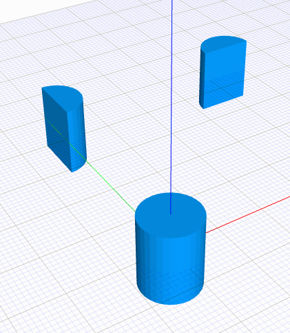
cutCircularSlice(opts, geom)
Cuts a slice of an object.
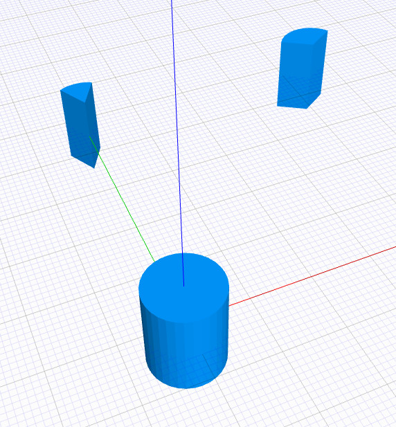
cloneQuadrant(inShape)
Clones one quadrant of the given 2D shape into all quadrants.
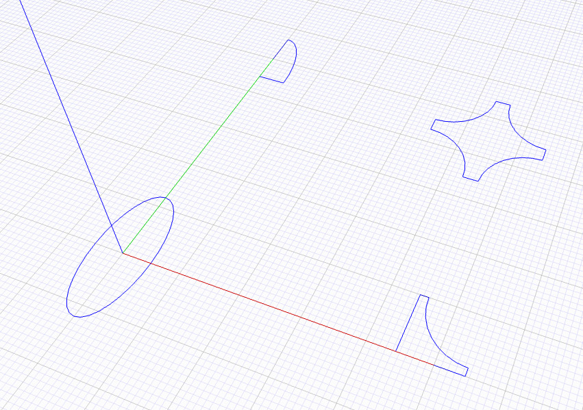
cutQuadrant(inShape)
Cuts one quadrant of the given 2D shape.
stack(opts, geoms)
Stacks geometries on top of each other, starting from the bottom.
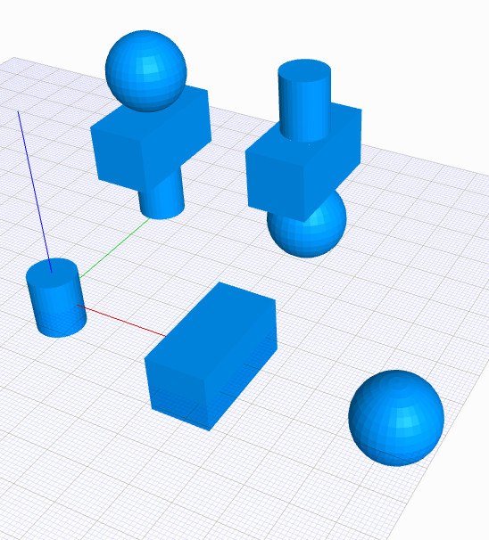
PROFILES
Modelling functions that generate 2D geometries.
profiles.beadsBits
Modelling functions that generate 2D beads (basic shapes mainly for additive hull functions) and bits (basic shapes for subtractive hull functions).
profiles.beadsBits.corner
Modelling functions that generate 2D shapes which emulate woodworking router bits.
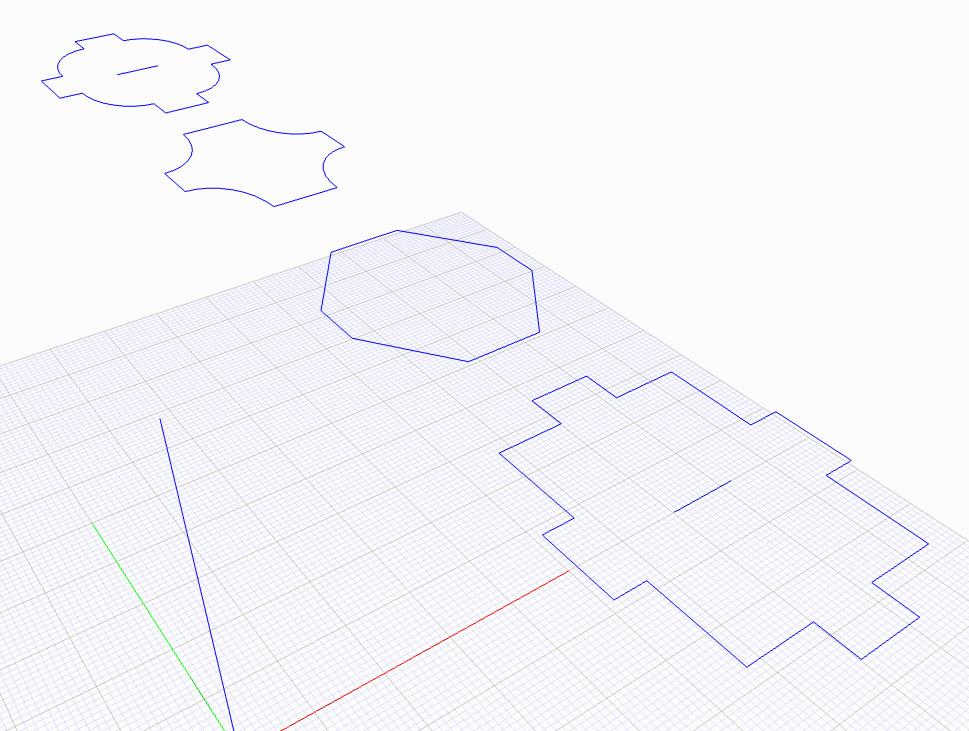
chamfer(opts)
Generates a 2D chamfer bit.
cove(opts)
Generates a 2D cove bit.
rabbet(opts)
Generates a 2D rabbet bit.
roundOver(opts)
Generates a 2D round-Over bit.
profiles.connections
Modelling functions that generate connecting and interlocking 2D parts.
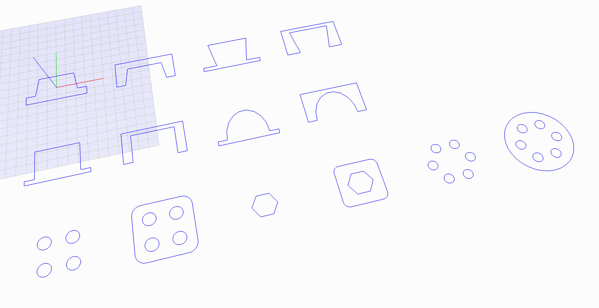
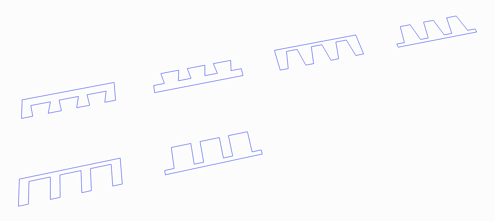
boltCircle(opts)
Generates bolt circle connectors.
dovetail(opts)
Generates dovetail connectors.
dovetailRow(opts)
Generates pieces connected by a row of dovetails.
ellipse(opts)
Generates ellipse connectors.
pegboard(opts)
Generates pegboard connectors.
polygon(opts)
Generates polygon connectors.
rightAngleTab(opts)
Generates right-angle tab connectors.
rightAngleTabRow(opts)
Generates pieces connected by a row of right-angle tabs.
tab(opts)
Generates tab connectors.
tabRow(opts)
Generates pieces connected by a row of tabs.
profiles.connections.jointPanel
Modelling functions that generate connecting and interlocking 2D panels.
oneJointRectPanel(opts)
Generates a set of two interlocking panels, made by dividing a rectangle in half with the given options.
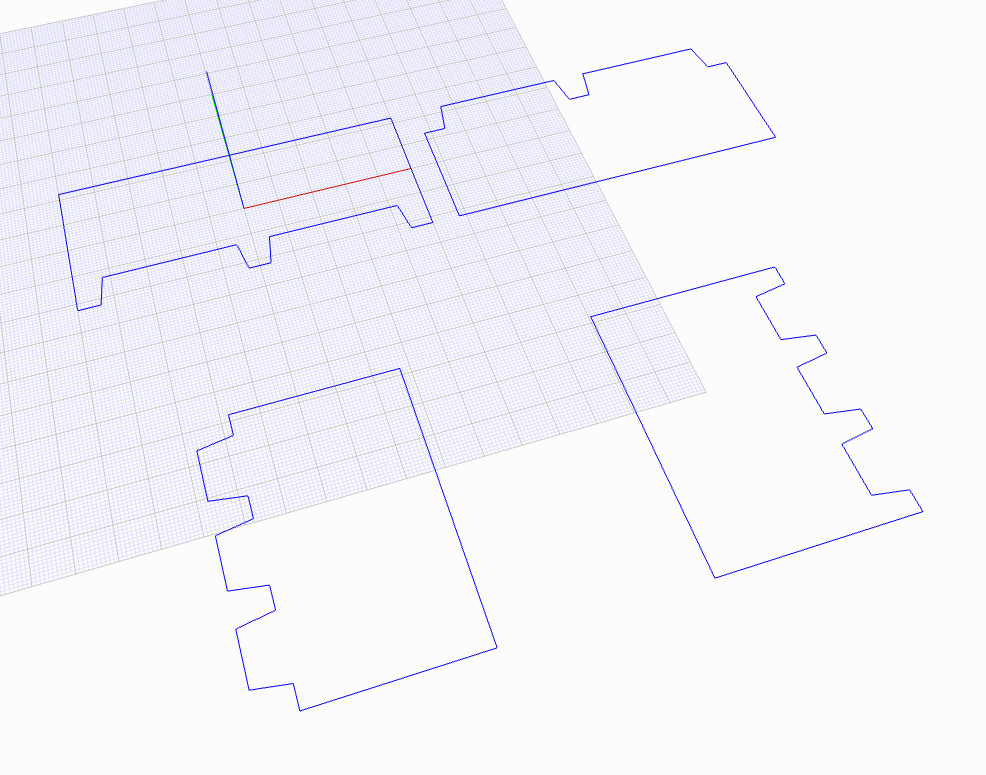
twoJointRectPanel(opts)
Generates a set of four interlocking panels, made by dividing a rectangle into quarters with the given options.
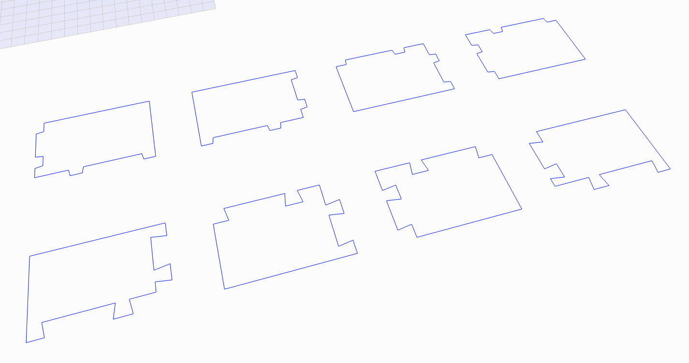
profiles.mesh
Modelling functions that generate 2D perforated shapes.
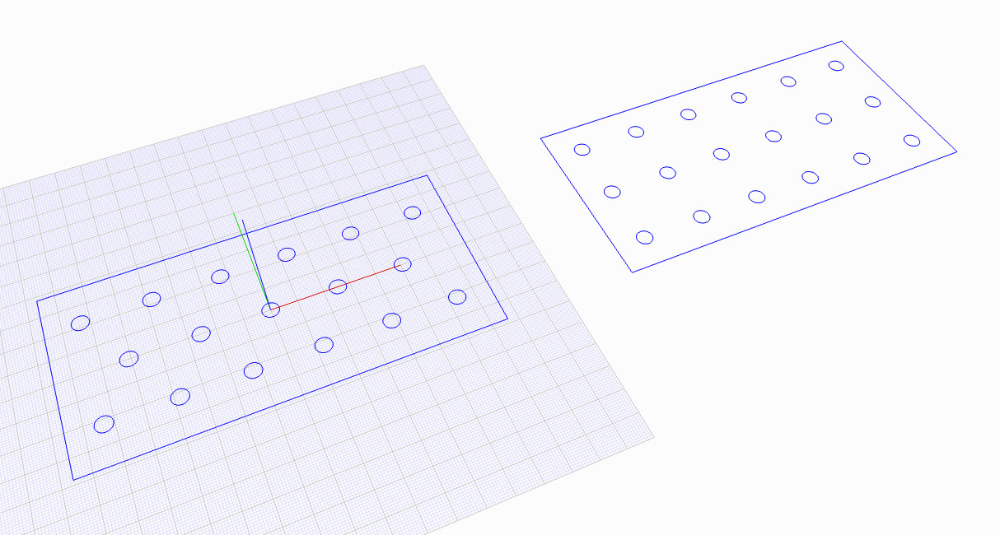
meshPanel(opts)
Generates a 2D mesh panel with the given options.
profiles.reinforcements
Modelling functions that generate 2D shapes for reinforcements.
reinforcedRect(opts)
Generates a 2D reinforced rectangle with the given options for reinforcement styles.
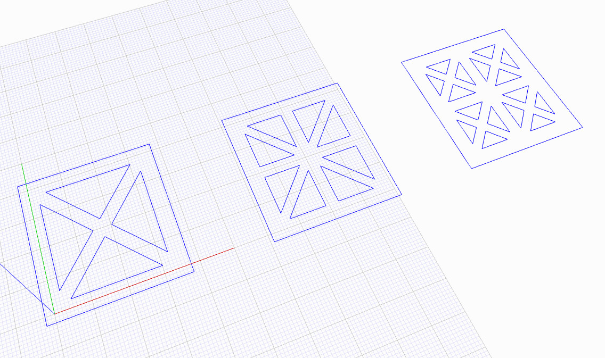
profiles.reinforcements.boxCurve
Modelling functions that generate curved 2D reinforcements for right-angle corners.
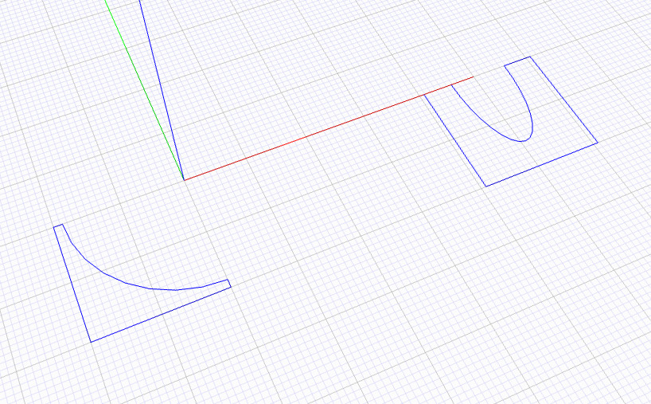
boxCurveHalf(opts)
Generates a curved 2D reinforcement covering three sides (two corners) of a rectangle.
boxCurveQuarter(opts)
Generates a curved 2D reinforcement covering two sides (one corner) of a rectangle.
profiles.text
Modelling functions that generate 2D text.
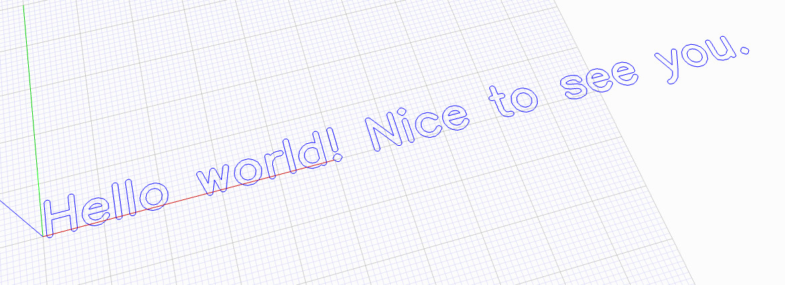
basicText(param0)
Generates a simple 2D line of text.
COMPONENTS
Modelling functions that generate 3D geometries.
componentLine(opts)
Generates a line connecting several repetitions of the given component. Accepts various options for spacing and offsets.
components.beadsBits
Modelling functions that generate 3D beads (basic shapes mainly for additive hull functions) and bits (basic shapes for subtractive hull functions).
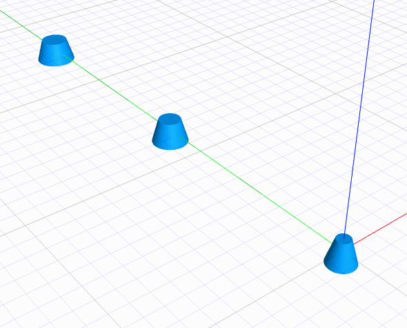
basic30DegBead(baseThickness, width)
Generates an elliptical cylinder bead, with a 30-degree slope.
basic45DegBead(baseThickness, width)
Generates an elliptical cylinder bead, with a 45-degree slope.
interface30DegProfileBeads(baseThickness, smWidth, mdWidth, lgWidth)
Generates a set of elliptical cylinder beads for interface connections.
components.beadsBits.corner
Modelling functions that generate 3D geometries which emulate woodworking router bits.
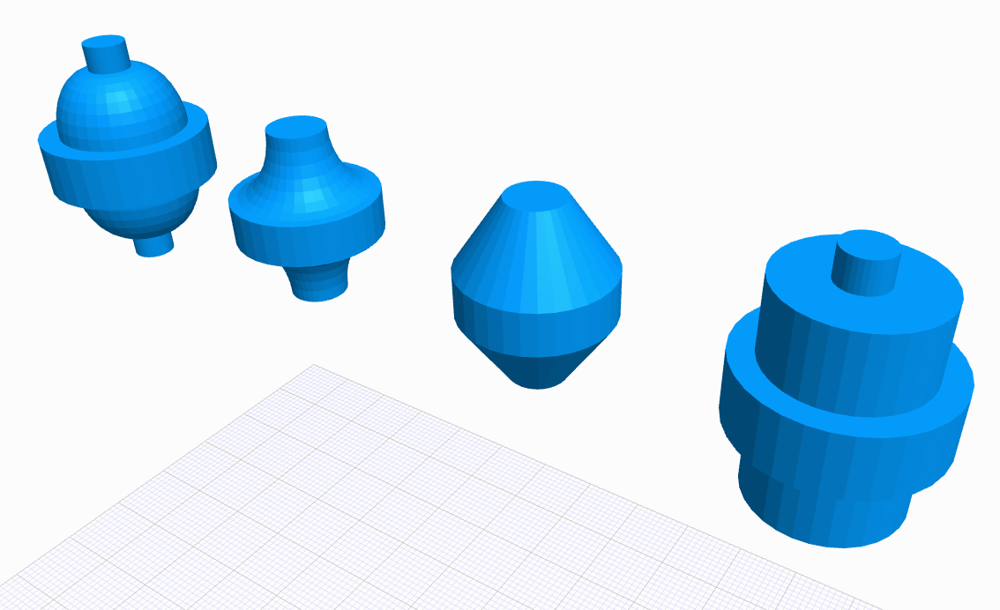
chamfer(opts)
Generates a 3D chamfer bit.
cove(opts)
Generates a 3D cove bit.
rabbet(opts)
Generates a 3D rabbet bit.
roundOver(opts)
Generates a 3D round-over bit.
components.fittings
Modelling functions that generate 3D fittings that integrate with round/rectangular profiles (dowels, dimensional lumber, etc).
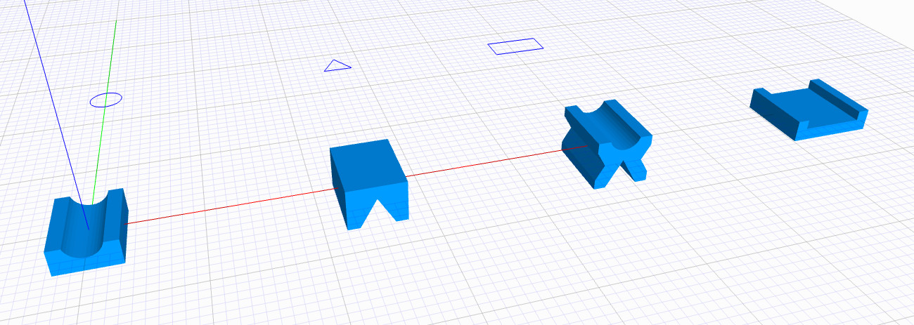
doubleRoundFitting(opts)
Generates a fitting that accomodates 2 round dowels, plus space for 2 side dowels.
invRoundFittingCutProfile(opts)
Generates a 2D cutaway profile for inverted round fittings.
inverseRoundFitting(opts)
Generates a fitting for dowels, inverted for 3D-printing from the bottom (triangular groove).
rectFittingCutProfile(opts)
Generates a 2D cutaway profile for square/rectangular fittings.
rectangularFitting(opts)
Generates a fitting for square/rectangular dowels.
roundFitting(opts)
Generates a fitting for dowels (round groove).
roundFittingCutProfile(opts)
Generates a 2D cutaway profile for round fittings.
components.mesh
Modelling functions that generate perforated 3D shapes.
meshPanel(opts)
Generates a flat 3D mesh panel with the given options.
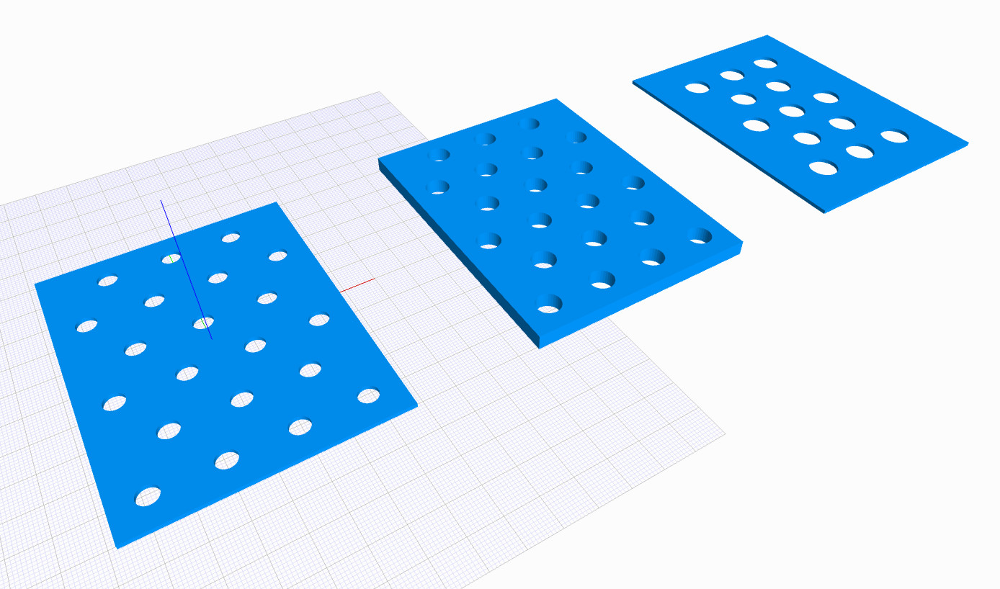
components.reinforcements
Modelling functions that generate 3D reinforcements.
reinforcedJoist(opts)
Generates an open web joist with the given options for reinforcement styles.
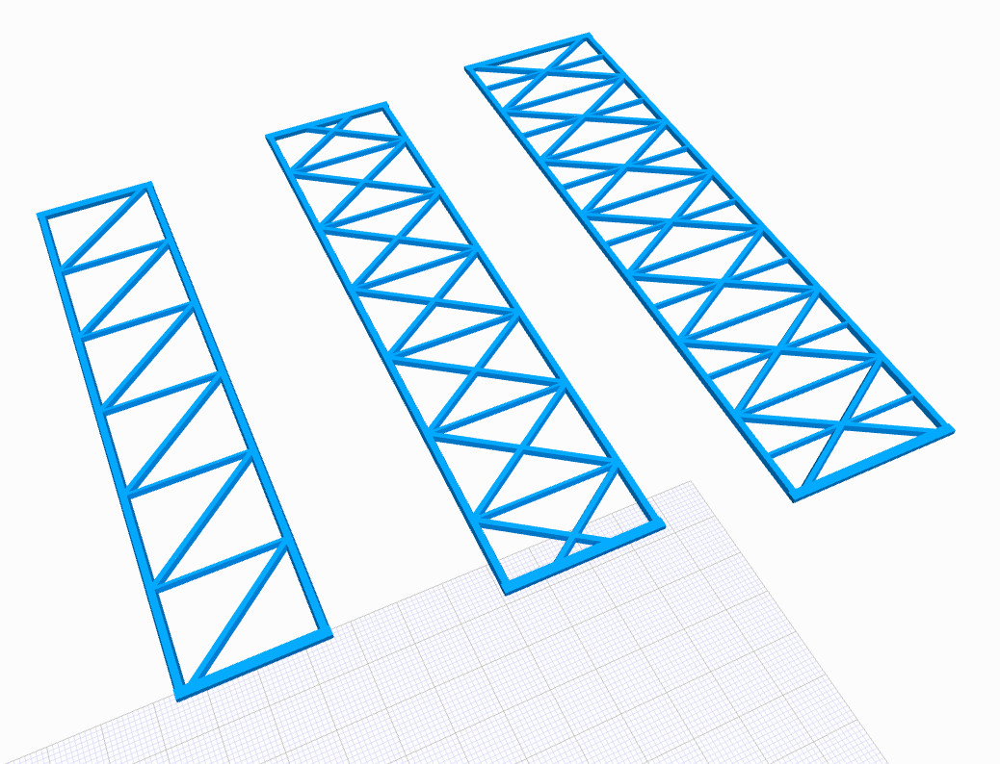
reinforcedRectPanel(opts)
Generates a reinforced 3D rectangular panel with the given options for reinforcement styles.
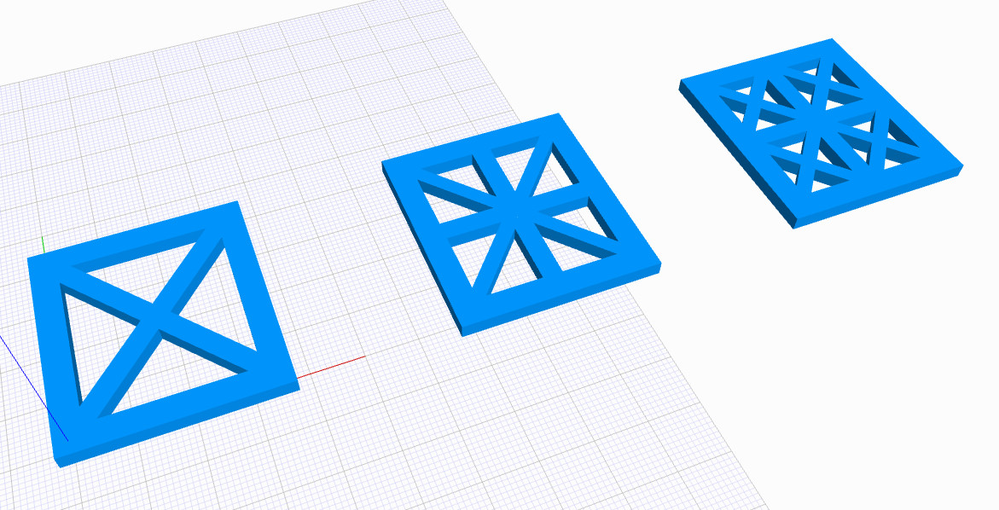
components.reinforcements.boxSupport
Modelling functions that generate curved 3D reinforcements for right-angle corners.
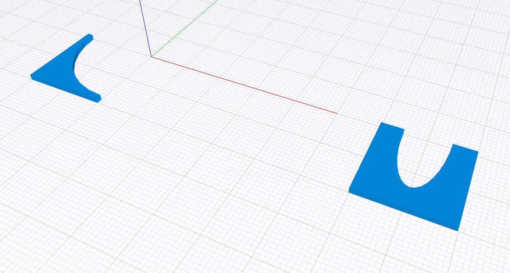
boxSupportHalf(opts)
Generates a curved 3D reinforcement covering three sides (two corners) of a rectangle.
boxSupportQuarter(opts)
Generates a curved 3D reinforcement covering two sides (one corner) of a rectangle.
components.routedShapes
Modelling functions that generate 3D geometries which have been "routed" with bits from components.beadsBits.corner.
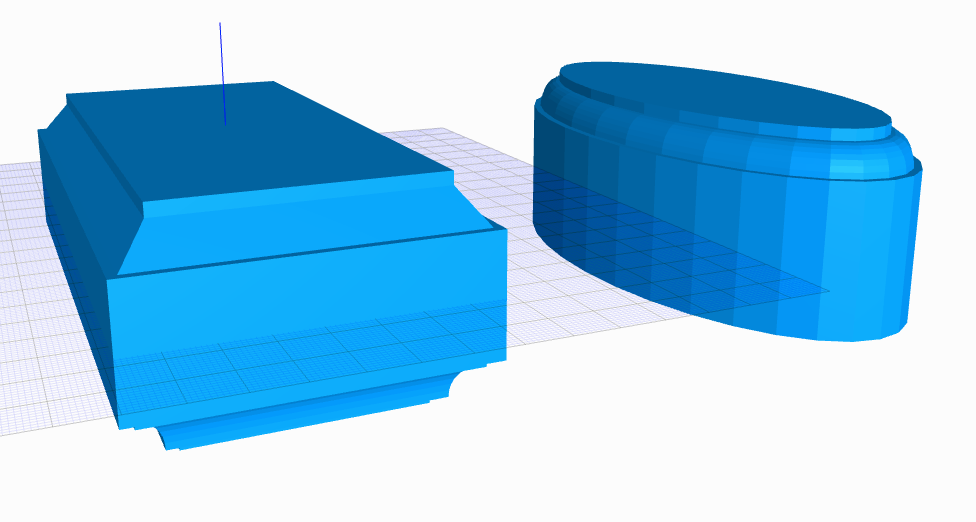
routedCuboid(opts)
Generates a routed cuboid with the given options for top and bottom edges.
routedCylinderElliptic(opts)
Generates a routed elliptical cylinder with the given options for top and bottom edges.
components.text
Modelling functions that generate 3D text.
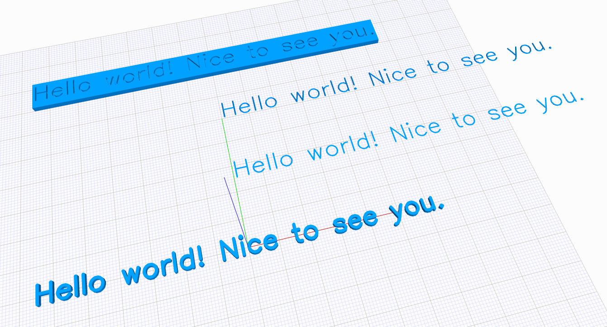
engravedText(opts)
Generates a 3D line of text, with engraved profile.
flatText(param0)
Generates a simple 3D line of text.
textPanel(opts)
Generates a rectangular panel with engraved text.